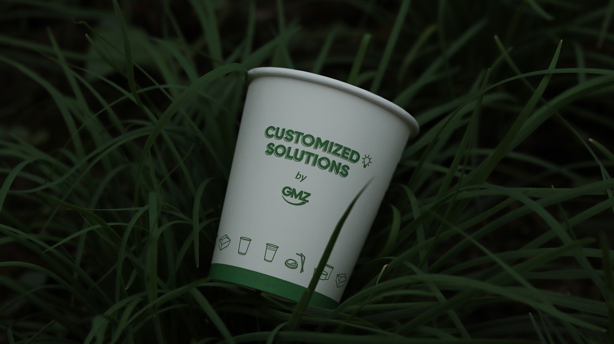

Componentes de Nuestra Cafetería Ecológica
Nuestra cafetería está compuesta por varios elementos clave que garantizan una experiencia sostenible y de alta calidad:
- Productos 100% orgánicos y de comercio justo
- Ambiente natural y acogedor con decoración ecológica
- Uso de materiales biodegradables y reciclables
- Equipo capacitado en prácticas sostenibles
- Programas de educación ambiental y talleres
Nuestra Marca
